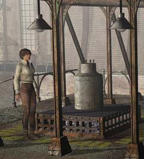
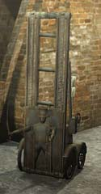
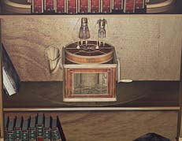

| 概要 | 地図 | |
| 淡いヒント集 | ヒント集 | 的確なヒント集 |
| 攻略最短ルート | Syberia 攻略へ |
| << 前の段階へ | 地域選択へ | 次の段階へ >> |
バラディレーン
|
カラクリ人形の工場

工場に入る前に、ちょっと寄り道してこのタンクを運んでおこう。このタンクは、人形の部品を作る機械のオイルである。オイルを運べば、その横にあるカラクリ人形の意味も分かるだろう。 
工場の機械が置いてある場所をよく見ると扉が見えるはずだ。その扉の中に入ると、水車が見える小部屋に到着する。 レバーを下に引くと、ネズミが現れ水車を回してくれる。それを確認したら、別なレバーを動かすことで、工場の機械に通じるパイプと水車が結合し、工場全体に低い稼働音が響くはずだ。

このカラクリ人形は、工場の機械にオイルを運ぶものである。外に置いてあるオイルタンクを工場に運ばないと意味がない。 
オスカーをおろした後、彼から足の製造を頼まれる。 工場の階段を上がったところにあるこの機械で製造するのだが、工場の動力を確保するのが先決である。動力を確保しているのならば、パンチカードを差し込み、右にあるスイッチのうち3番スイッチを押す。ランプが光るので、左のレバーを押して色を選び、右のレバーを押すことで足が作られる。 画像が小さいが、この色である。 
工場の階段を上ってすぐの所に、アンナの書斎がある。その書棚は一見何の変哲もないのだが、一番上の本に秘密がある。一番上の棚に置かれている本の、右から2番目を動かしてみよう。これが隠しスイッチとなり、時計の置かれた棚が回転しオルゴールが現れるのだ。

このオルゴールに入っているシリンダーを回収した後、死体安置所で入手したシリンダーを付けてみよう。アンナとハンスの過去を見ることができる。見た後に、オルゴールに付いている人形がはずれるので忘れずに持っていこう。 |
| << 前の段階へ | 地域選択へ | 次の段階へ >> |
| 概要 | 地図 | |
| 淡いヒント集 | ヒント集 | 的確なヒント集 |
| 攻略最短ルート | Syberia 攻略へ |
Syberia
| 目次へ戻る | ページの上部へ |